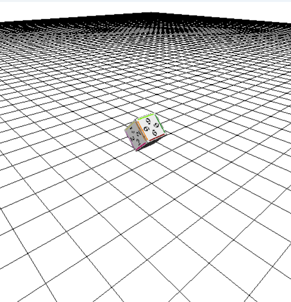
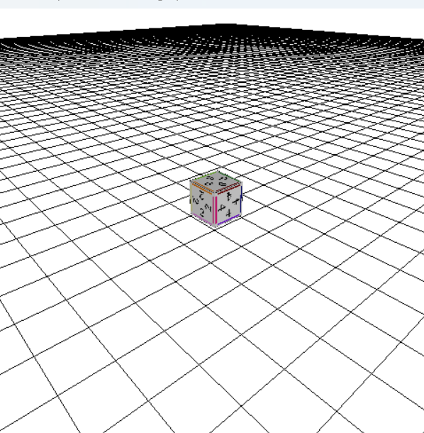

TECHNICAL PROJECT / 3D GRAPHICS
OpenGL 3D描画・操作実験
C++とOpenGLを使い、3Dモデルの読み込み、テクスチャ描画、クォータニオンによる回転を実装した技術学習プロジェクトです。完成ゲームではなく、3D描画の処理を理解し、組み合わせるために制作しました。
開発環境
C++ / OpenGL / FreeGLUT
本人が主に実装
OBJ読込用ヘッダ・テクスチャ読み込み・クォータニオン計算
位置付け
個人技術学習
実行画面・動作動画
格子状の床と、数字のテクスチャを貼った立方体を表示した実行画面です。動画では、視点や立方体の向きが変わる様子を確認できます。


DEMONSTRATION VIDEO
OpenGL動作動画（約38秒）
立方体と床の表示、視点・姿勢が変わる場面を収録しています。サイト内で再生できない場合はGoogle Driveから確認できます。
Google Driveで動画を見る※ 動画は表示結果の記録です。OBJ読み込み処理やシェーダー内部の実装手順そのものを映したものではありません。コードの説明は下の技術欄に分けています。
自分で取り組んだ技術
- OBJモデル読み込み：OBJ形式のモデルを読み込むためのヘッダを作成し、頂点位置・法線・UV座標を参照する描画処理へつなげました。
- テクスチャ読み込み：画像データを読み込み、RGB/RGBAの形式を判定してOpenGLのテクスチャへ転送する処理を実装しました。画像のデコードには
stb_imageを利用しています。 - クォータニオンによる回転：角度・回転軸からクォータニオンを作り、積によって姿勢を更新し、3Dモデルの回転に反映しました。
- 操作・挙動：マウスドラッグで視点を操作し、左右キーで移動と回転、スペースキーで投射・着地後の減速を試しました。
クォータニオンの合成処理
角度と軸から姿勢を生成し、追加回転を既存の回転と合成する処理です。回転の順序を意識しながら3Dオブジェクトを操作する実験を行いました。
Quaternion Mul(Quaternion a, Quaternion b)
{
return {
a.w*b.x + a.x*b.w + a.y*b.z - a.z*b.y,
a.w*b.y - a.x*b.z + a.y*b.w + a.z*b.x,
a.w*b.z + a.x*b.y - a.y*b.x + a.z*b.w,
a.w*b.w - a.x*b.x - a.y*b.y - a.z*b.z
};
}使用したライブラリと確認状況
OpenGL/FreeGLUT、GLSL、stb_imageを利用しています。外部ライブラリ自体の実装ではなく、それらを組み合わせる読み込み・回転・操作処理を主に自分で実装しました。
OBJローダーは、頂点位置・UV・法線・三角形面の読み込みに対応しています。読み込み部分（myprint.h / myprint.cpp）、テクスチャ処理、クォータニオン演算を自作しました。画像のデコードにはstb_imageを使用しています。